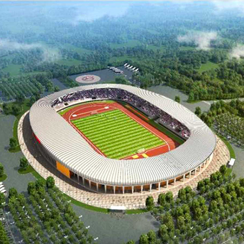
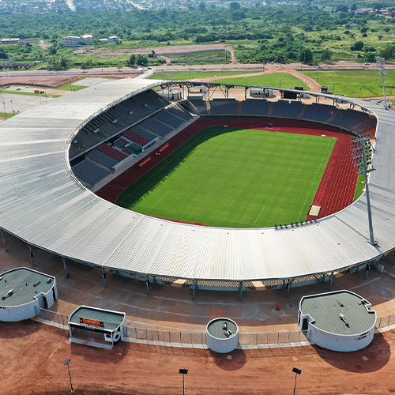
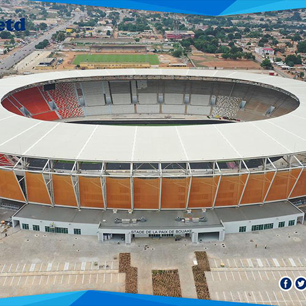
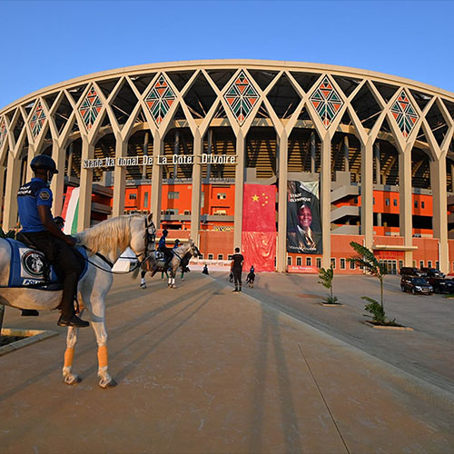

Stadium of Bouake
Stadium 1 is one of the venues for the Africa Cup 2023. It has a seating capacity of 40,000 and is known for its state-of-the-art facilities.

Stadium of Korogho
Stadium 2 is another iconic venue for the tournament, with a seating capacity of 35,000. It offers a fantastic viewing experience for fans.

Stadium of Felix Houphoet
Stadium 3 is a historic stadium with a capacity of 45,000. It has hosted numerous memorable matches in the past.

Stadium of Ebimper
Alassane Ouattara Stadium, commonly known as the Olympic Stadium of Ebimpé and formerly as the National Stadium of the Ivory Coast, is a multi-purpose stadium in Ebimpé and Anyama, in northern Abidjan. It opened in 2020..